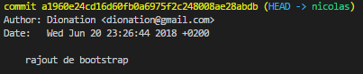

Il vous faut à l'aide de votre terminal initialiser votre projet git :
Vous pouvez voir que votre fichier index.html y apparait en rouge,cela veux dire que ce fichier est différent de la dernière sauvegarde de votre repository github
A l'aide du terminal visual studio il va falloir annoncer à votre projet git que vous voulez faire une sauvegarde des dernières mises a jours que vous avez faites,pour votre part la dernière modification que vous avez faites est la création d'un fichier index.html
Quand on termine une étape importante on veut que notre avancée soit indépendante pour que si un jours vous voudriez revenir à ce point d'avancement précis il vous est possible de le faire
Toujours a l'aide du terminal visual studio et des commandes bash
Il faut voir un repository git comme un tronc d'arbre et les branch bah comme des branches sur les quels vous travaillez
Pour le moment vous travaillez sur la branch master qui est celle crée par défaut
Vous pouvez voir que votre branch à été rajouté a la liste mais contrairement à master qui est verte votre branch elle est blanche, c'est du au fait que actuellement vous travaillez sur la branch master et la couleur verte sert d'indicateur
Comme vous avez pu le constater vous travaillez sur la branch master
Vous pouvez observez dans votre terminal que votre branch avec votre prénom est en verte alors que master est blanche, vous venez de changer de branch
L'interet des branch, c'est de travailler sur une branch isolée. Si on travaille en équipe sur le même projet (et donc le même repository), on créerait des conflits en travaillant tous sur la branch master. Voir d'empechez les autres de l'équipe d'envoyer leur sauvegarde sur la branch master pour mettre à jours le projet.
Il faut voir votre branch comme votre partie personnel du site web que personne n'irait modifier, par exemple Vous travaillez sur la page de contact,cette page fera partie de votre branch, et votre collegue lui s'occupera de la page gallerie et elle sera attribuée à sa branch.
Quand vous aurez avancé dans votre partie vous irez mettre le contenu de votre branch sur la branch "master" et votre collegue mettra le contenu de sa branch a lui également sur "master"
Ce qui fait que "master" sera le résultat de votre branch + la branch de votre collegue
Pour ne pas poser de problème chaque membre de l'équipe créer sa branch et par la suite "en fin de journée généralement" tous rajoutent leurs modifications sur master
Depuis le début nous créons des commit ( des points de sauvegardes ) chaque commit représente un avancement dans votre travail
Vous pouvez connaitre tous les commit que vous avez fait depuis le début graçe à git log
Vous devriez avoir une liste avec vos commit,votre dernier commit était "rajout de bootstrap" affiché tout en haut de votre terminal
Il devrait plus au moins ressembler a ça

La première ligne de votre commit est un numéro écrit en jaune ,nous reviendrons dessus par la suite.
Maintenant que nous avons pu voir ou se cachaient nos commit on va pouvoir revenir en arrière si on le désire
Vous avez déjà vu comment passer d'une branch a une autre, quand vous êtes passé de la branch "master" a la branch "prénom"
Nous allons faire pareil mais pour passer d'un commit a un plus ancien.
Pour l'instant vous êtes sur le dernier commit que vous avez fait.
Vous pouvez retourner voir dans votre fichier index.html est vous rendre compte que votre title s'appelle à nouveau master
Quoi ? "mon premier git log" n'apparait pas ? C'est normal, c'était votre dernier commit est donc votre dernier commit est au même niveau que votre branch prénom, avec cette information là vous devriez facilement savoir comment revenir a votre dernièr commit.